EXAMPLES
Import Parts from Digikey
1) On the Digikey website use the EDA/CAD filter to restrict your result set to parts with included schematic components and layout footprints.
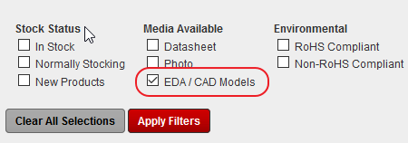
2) Select the part you want from the resulting data set and click on the Ultra-Librarian (or SnapEDA) link to visit their site.
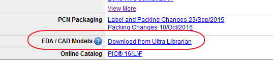
You may need to log in to your Digikey account at this stage.
3) Select the Proteus format from the Ultra-Librarian site and download the resulting zip file to your computer.
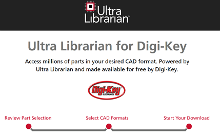
4) From inside Proteus launch the Import Part Wizard from the Library Menu and bring in the zip file.
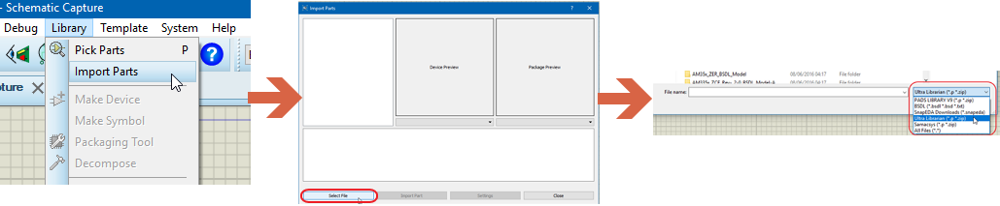
5) Review the log for import warnings.
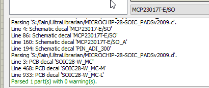
6) Use the Import Part command to bring in both the schematic component and the PCB footprint. If the downloaded zip file contains a 3D STEP model this will also be brought in as part of the import process.
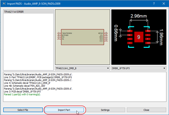
You are actually running the PCB Make Package Wizard followed immediately by the schematic Make Device wizard in this last step. This provides you with opportunity to enter extra information and specify a destination library for the part.
See Also:
Manipulating the Schematic Part
If the schematic part is large and you want to split it into several elements or change the pin ordering the easiest way to do so is before you import that part (i.e. before stage 6 outlined above). Edit the settings and lower the schematic pin threshold so that the body editor screen will be shown during the import process.
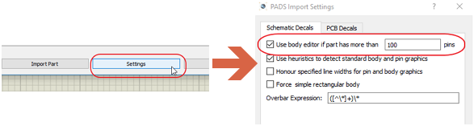
The body editor allows you to both re-organise the pins on the schematic and also to split / fragment the schematic symbol into multiple elements.
See Also:
Import from Samacsys
SamacSys is the leading developer of software tools for creating and managing electronic component ECAD data. To import one of their schematic or PCB footprints, you can do so by using the following procedure:
(Note that we are assuming that you currently have a Proteus project with a schematic and a PCB tab already open!).
1. Install the free Library Loader: http://www.samacsys.com/library-loader/
2. Create an account in Library loader
3. Set the download and tool settings to your requirements:
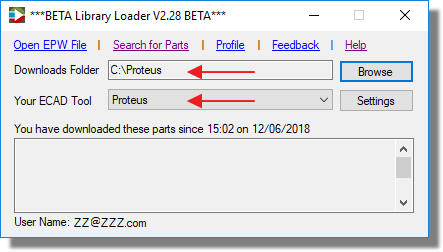
4. Set the library paths to your Proteus installed library:
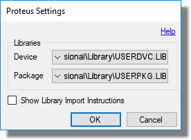
5. Click on Search for parts
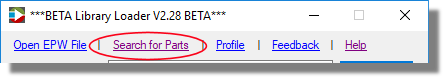
6. This opens the download page https://componentsearchengine.com, here type in the name of the device you are looking for and when it loads, click on Free Download (this is only available if you have created an account!).
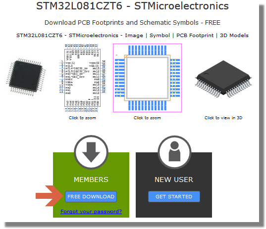
7. Save the zip file to the same directory as you have set in the library folder in our case it is C:\Proteus\. If you have selected the 'Show Library Import Instructions' box in the Settings, the Log will then appear showing the importing status:
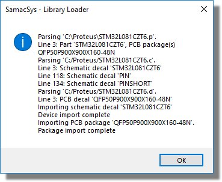
If this is unchecked then the above box will not appear. It is better to generally have the box unchecked, and if you run in to importing problems, you can check the box to see any errors.
8. At this point the device and/or package will automatically appear in the object selector in Proteus on either the schematic or the PCB Layout, ready for placement.
Import from PCB Library Expert
The PCB Library Expert Enterprise is a powerful CAD library development tool powered by their own proprietary CAD LEAPTM Technology (Libraries Enhanced with Automated Preferences). It is packed with very powerful advanced library management features that cuts footprint creation costs by as much as 99% per part.
We are assuming that you have a project already open when importing devices from PCB Libraries Expert.
1. In PCB Libraries Experts software, once you have created your package click on the Build icon
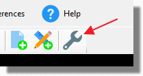
2. Select Proteus as the Translator, and the 'Set Default Format' should be checked:
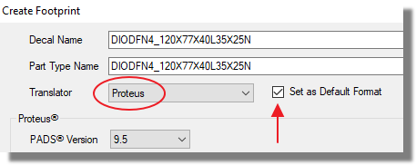
3. Select the PADS Version to be 9.5, Set the Output Directory to save the file to, and the format to be Parts and Decal (ASCII is the Legacy version!)
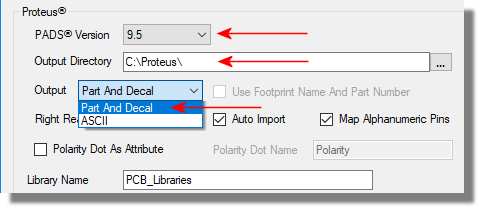
4. Click on Create
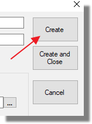
5. In Proteus, go to the Library Menu > Import Parts and click on Select File. In the open window, select the File type to be 'PCB Libraries' and navigate to the saved *.P file and select Open.
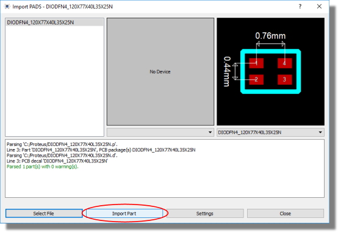
6. Continue with the Proteus Make Device / Make Package forms and save the part in to your libraries.
Import from Ultra Librarian
Ultra Librarian utilize globally recognized industry standards from IPC-7351B for PCB footprints, ASNI Y32.2-1975 (reaffirmed 1989) for schematic symbols, and ISO10303-21 for 3D STEP models. You can downloads thousands of schematic or footprints from their website
1. On their website, find the part you are looking for through the search function:
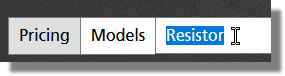
2. On the list that appears, click on the Models Available link on the device that you need:
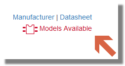
This will provide you with a preview and download options for the part.
3. Set Proteus as the CAD Format, set the pin numbering to be either sequential (in order 1,2,3 etc..) or Functional (Power pins, Signal Pins, Port Pins etc..) and the units of the PCB footprint and click on Download.
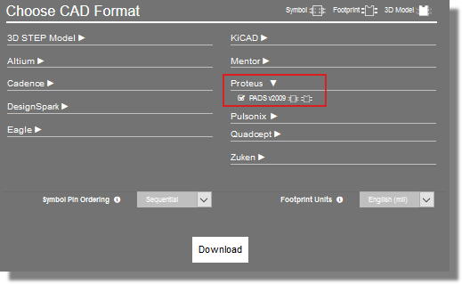
4. Save the Zip file to your Hard drive.
5. In Proteus, go to the Library Menu > Import Parts and click on Select File. In the open window, select the File type to be Ultra Librarian and navigate to the saved ZIP file:
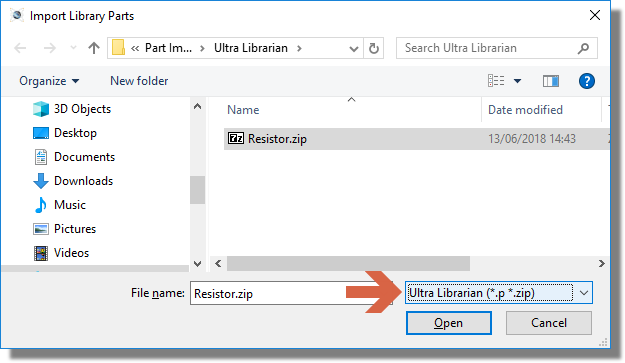
6. Open the zip file and it will appear in the Import form. Click on Import Part and save the package and the schematic symbol into your libraries.
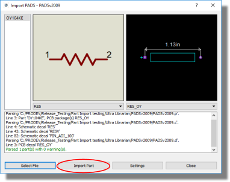
Import from RS Online
RS Online is an international online electronics vendor with over 500,000 electronics components from over 2,500 trusted brands. You will need to have the Library Loader software installed: http://rs.componentsearchengine.com/pcb-libraries.php
1. On RS Online's website, find your component. For this example we are using the Vishay 1N5408-E3/54 Diode, 1000V 3A, 2-Pin DO-201AD.
2. Click on the Explore all Technical Documents link:
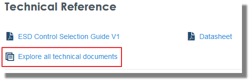
3. Click on Schematic Symbol & PCB Footprint and download the file.
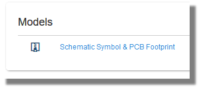
4. Open the Library Loader and click on the Open EPW File link:
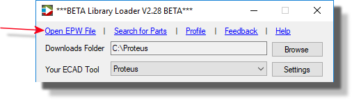
5. Navigate to either the Zip file or the extracted *.EPW file, the loader will open either one and it will be automatically imported in to the Object selector in Proteus.
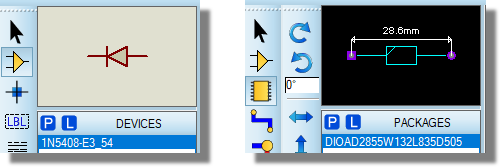
Import from SnapEDA
SnapEDA is the Internet's pioneering, market-leading parts library for circuit board design. You can import their schematic and PCB parts in to Proteus from their website by following these instructions:
1. On SnapEDA's website, search for your component and make sure that it contains the models that you require (on the RHS of the website page):
2. click on the Download button:
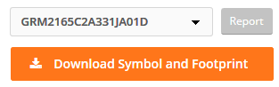
3. Select Proteus from the list and save the file to your hard drive
4. In Proteus, go to Library > Import Parts and click on Select File
5. Select the file type to be SnapEDA and open your file:
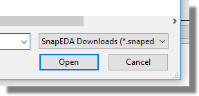
6. Now it's loaded, click on Import Part and save it to your Proteus libraries.
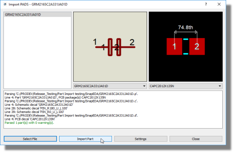
Import BSDL File
BSDL files can be found and downloaded from a vast array of manufacturers websites and there are also some free collection websites such as http://www.bsdl.info. Having downloaded the file(s) to your computer you can then import them via the Library Menu in the schematic application module.

Import File.
Navigate to and select the BSDL file on your computer. Proteus will then parse the file and, assuming no errors, will launch a modified version of the Make Device dialogue form.
If you receive a parse error from your BSDL file please e-mail us with the file attached at support@labcenter.com. Most often this is a simple syntax error in the manufacturers file and is easily fixed.
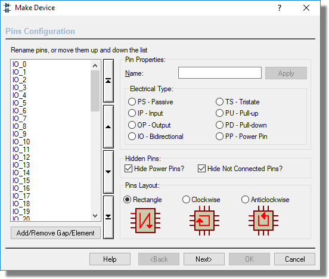
BSDL Configuration Dialogue.
While the BSDL file contains a lot of helpful information, configuring the part for use in Proteus still requires some thought by the designer. The configuration screen of the dialogue form is the place where most of the decisions are made.
Pin List
The pin list is the collection of pin names imported from the BSDL file and is shown at the left hand side of the dialogue. The important thing to realise is that this will be the order of placement, according to the selected Pins Layout option. What you see in this list after import is likely to be a list of pins in a random order and would form a very messy schematic part. The first job therefore is to group pins together that belong together on the schematic (pins on a bus being the obvious example).
Re-ordering the List
Selection of pins in the list works exactly like Windows explorer, namely:
To select a contiguous group of pins: Click to select the first item. Hold Shift button down and click on the last item (or drag the mouse down).
To select a disparate group of pins: Click to select the first item. Hold CTRL button down and click on items you want to select.
Once the pins you want are selected, you can move them up or down using the buttons to the right.
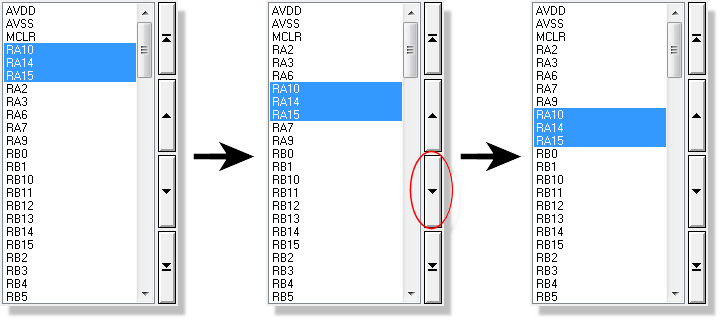
Re-ordering the PORTA Pins into logical positions.
Inserting Blank lines
Click on the 'Add/Remove Gap / Element' button to insert a blank line / gap on the physical design.
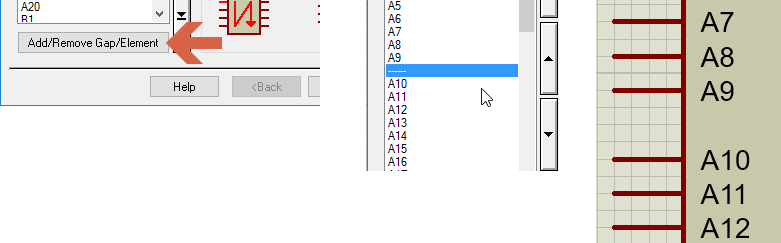
Inserting Component Separators
Often, BSDL Files are created for large pin count parts or BGA's. The problem with creating this as a single component is that the resulting part will be so large and unwieldy that is unlikely to fit on a single schematic sheet. We have therefore added the ability to insert component separators to the pin grid. These will split the component into multiple elements which are far more manageable on the schematic.
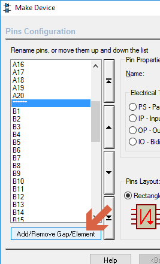
1 click creates gap, 2nd click creates element, 3rd click removes the element and / or gap.
Adding a blank line (a gap) will appear as a series of dashed lines in the pin grid whilst adding a component separator will appear as a series of stars in the pin grid. The button itself is tri-state.
Visible Power / NC Pins
Some users prefer for design auditing purposes to have all power and NC pins visible and connected on the schematic. This is controlled via the hide power pin / NC pin checkboxes on the dialogue.
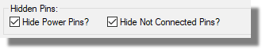
There are several things to bear in mind here:
- Power pins with the same name can be hidden and will then connect to the net with that name. Similarly, all pins named NC can be hidden and will be connected to the NC net in the packaging tool.
- When power pins are hidden all pins with the same name are added to the packaging as virtual pins and connectivity is achieved by matching the pin name to the net name. E.g. All hidden pins named GND are connected to the GND net.
- When NC pins are hidden the pins are added virtually to the NC pins list in the packaging tool.
If you make power pins visible then you will receive a set of pins all will the same name and you should then connect them to the power rail manually. For example, you will end up with GND_01, GND_02, GND_03 etc. and you must tie all the lines to GND on the schematic.
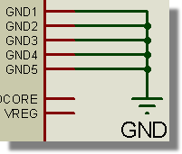
NC Pins will similarly be broken out and you should tie all these lines to an NC terminal.
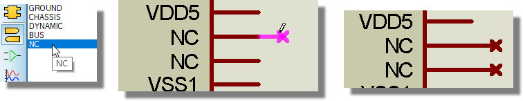
It is not strictly necessary to connect visible pins with the name NC to NC terminals However, if they are visible the only legal connection that can be made to them is an NC terminal so if you don't want the visual clarity of having them present and connected to NC terminals then it is far simpler to hide them altogether.
Renaming Pins on the List
Much like the ordering of the pins, the naming of the pins is imported raw from the BSDL file. This means that you need to be aware of software behaviour regarding connectivity, hidden pins and pin naming. It all boils down to two simple rules:
1) Pins with the same name on a device are deemed internally connected.
2) Pins named NC will be considered Not Connected pins.
Aesthetic changes aside, there are therefore two areas where the user may want to rename some pins. The first and most important is power pins. A pin is deemed a power pin where it's electrical type is specified as power. When we look at the pin list you may find that there are multiple power pins with different names serving the same function. This depends entirely on the BSDL file - some vendors use individually named pins (VDD1, VDD2, VDD3, etc.) while others use a bit vector to describe multiple pins with the same name (VDD). In the former case, you are likely to end up with multiple physical pins on the schematic part, all of which will need to be wired together and joined to the correct supply.
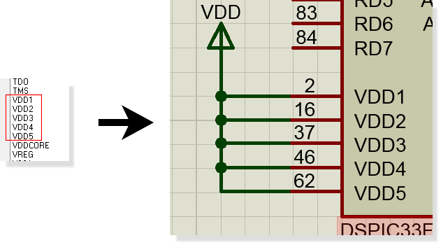
Example of Power Pins after Import - schematic wiring serves to connect the pins to supply.
As we've seen in the section above (visible power pins) this is a perfectly sensible way to work. It means for example that a printout of the schematic will be more reflective of the design than if the pins were hidden. However, you need to know that if your power pins are visible that at least one pin with each name is connected to a power rail. We would suggest however that if you choose to make your power pins visible that you group them together (e.g into a separate element) and then tie them all to their designated supplies with terminals.
The alternative is to rename the three pins in the pinlist to have the same name (VDD). If you do this then, provided the pins are of electrical type power and the hide power pins checkbox is selected, the five pins will become hidden pins not visible on the schematic part and will be automatically connected together and joined to the VDD supply. This has the advantage of smaller schematic parts and less wiring but at the expense of some transparency. Click on the 'Apply' button to change the pin name.
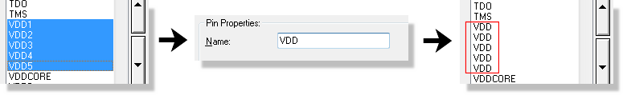
Renaming a group of pins.
Regardless of which method you adopt, the Power Rail Configuration dialogue can be used to double check that your power nets are all connected up properly.
The second area where pin naming is particularly relevant is not connected or NC pins. Any pin which has a name NC is designated as a not connected pin. When the hide NC pins checkbox is selected all such pins are removed from the physical schematic part and are automatically added to the not connected pin list in the packaging phase of the import wizard.
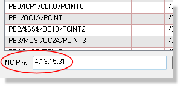
NC Pins in the Packaging Tool.
Most times, no action is required by the user as the not connected pins will be cleaned up and packaged as you progress through the import wizard. If you want your NC pins to be visible then you need to uncheck the hide NC Pins checkbox.
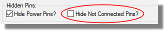
If you do this, we'd recommend that you tie all the NC pins to NC terminals so that their status is visually clear. You can also tie any other pin to an NC terminal if it is not used in your design and it will become unroutable in the layout.
BSDL files are typically written for very large parts with a lot of pins. Using the two techniques above can make the resulting schematic component far more manageable. See also the topic on deconstructing large components below.
Refer to the topic on NC Pins and packaging for more detailed information.
Pin Properties
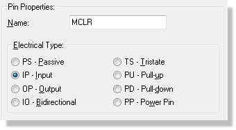
When a single pin is selected in the pin display, the pin properties area shows both the name and the electrical type of the pin as imported from the BSDL file. These can then be changed by the user as required. If multiple pins are selected then the name field is left blank and the electrical type will be blanked if the selected pins are of different types. As described in the power pin discussion above, you can rename multiple pins at once by selecting them, entering the new name and then clicking on a free area of the pin display.
Pin Layout
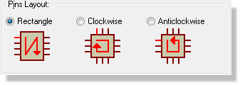
Pin layout gives you some control over the resulting schematic part, giving you options for pins on two sides or on all four sides of the part. It is generally best to opt for two sided parts on smaller devices (less than 100 pins) and four sided for larger devices. Multi-element parts are not supported in wizard which means that for very large parts, the user may need to re-assemble the device into several elements after placement.
Once the configuration is complete press the next button to continue with making the device. At this point we are essentially following the process detailed in the Make Device topic, although the packaging is worthy of further discussion.
Packaging(s)
A BSDL file can contain many packagings for a single component and this is fully supported in Proteus. However, the names of the footprints will most likely not be the same and you therefore need to edit the packaging to map the pins onto a footprint in the Proteus libraries.
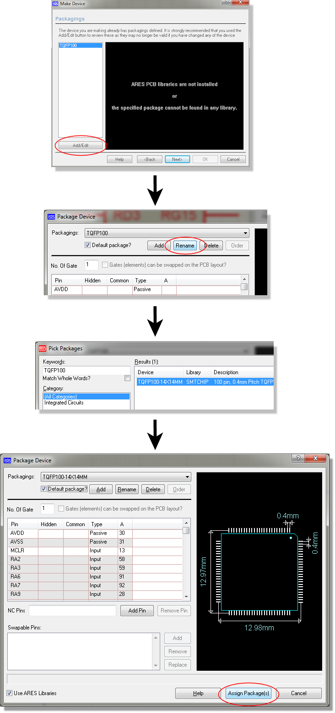
Packaging an ARES footprint from the BSDL Import.
The big timesaver here is that, immediately on selection of the ARES package, all of the pins/balls are correctly mapped. This can be verified from the preview at the right hand side where all pins should be coloured white. Also note that power pins with the same name are specified as hidden and common and that not connected pins are automatically added to the NC pins list. In short, the only thing the user needs to do is tell the software which Proteus package to use.
It is important to note that the information supplied by vendors in the BSDL file may not be complete for schematic purposes. In particular, passive pins and/or power pins may not be present in the BSDL file because they are not relevant to device testing. Refer to the topic on deconstructing devices for more information on modifying parts after import.
Checklist
The following is a short checklist for BSDL import:
- Check whether the pins in the pin grid need re-ordering or re-naming. They will appear on the schematic in the same order as they appear in the pin grid.
- Check whether you need to split the part into several elements and add component separators in appropriate places.
- Decide whether you want the power pins and NC pins visible on the schematic. If so, we'd recommend grouping them together and possibly separating them into their own elements.
- Check whether blank line separators would help with clarity (for example, on either side of a bus) and add where appropriate.
- Specify the direction of pin placement.
- Continue to part naming, packaging, etc in the usual way.
- If you've chosen to have visible power pins / NC Pins remember to tie them to the appropriate power and NC terminals on the schematic after placement.
Notes and Limitations
The following behaviours and limitations apply:
If you split the component into several elements then, after you are finished, Proteus will have automatically created a multi-element heterogeneous device for you. When you place the different elements of the device the part reference will include a ?. You must edit the elements and assign them all to the same device.
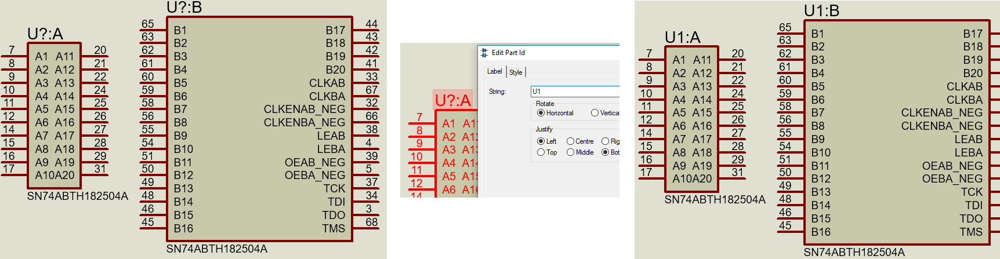
Iteration with FPGA's
When working with FPGA's you may re-map the ball's to aid PCB layout and/or you may add or assign functionality to pins that were previously NC. These must be handled separately to avoid confusion.
1) A re-map of the balls is a packaging change and can be done directly by loading the Xilinx or Altera pin map file into the packaging tool. More information here.
2) Adding functionality is a device change and requires that the updated BSDL file be imported into Proteus.
You cannot do both at the same time.
Deconstructing Large Components
When you import a large component, it's quite possible that you will need to make manual adjustments in order to use it effectively on the schematic. If you have chosen a 4-sided pin layout there will be a lot of 'dead space' in the middle while a 2-sided pin layout may just be too big for the schematic sheet. Your options are therefore :
- Re-import the BSDL file and use the component separators to split the device into multiple elements.
- Increase the sheet size to fit the component.
- Decompose the component (right click and select decompose from the context menu) and then either adjust the component body or re-make as a multi-element part.